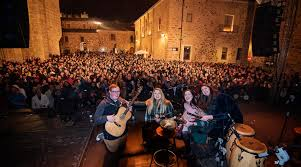
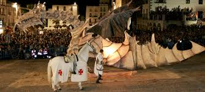

Fiestas y Tradiciones
Cáceres acoge varios festivales musicales y fiestas en distintas épocas del año.
Eventos culturales
Festivales de música
- WOMAD, festival de músicas del mundo que se celebra en el mes de mayo, y el SonoraCC, dedicado a la música pop, rock e indie nacional. Organizado por la organización mundial WOMAD -World Of Music, Arts & Dance- y creado por Peter Gabriel, en 1982, siendo el celebrado en Cáceres el primero de los dos que se celebran durante el año en España -Cáceres y Canarias- y que lo hace único entre los 9 que se celebran en todo el mundo, por tener lugar en el interior de una ciudad monumental.
- Cáceres Irish Fleadh, en noviembre, es un festival de música tradicional irlandesa y celta en general, con actuaciones en pubs y teatros de la ciudad.
- Festival del Oeste, en la primera semana de julio, con grupos de rock duro, heavy metal y punk-rock nacional e internacional.
Festividades Tradicionales
- Las Candelas y San Blas, del 1 al 3 de febrero. Son dos de las fiestas más populares de la ciudad. Durante la mañana del 2 de febrero la Virgen de las Candelas sale en procesión desde la ermita del mismo nombre, situada en el barrio de Santa Clara. Las calles se engalanan para recibir a la Virgen durante su recorrido. La festividad de San Blas se realiza en su templo parroquial, el mismo día de las Candelas, es decir la víspera del santo. Los alrededores de la ermita se llenan de jóvenes con el vestido de campuza y el hermoso pañuelo «de sandía» o «de mil colores». Durante la tarde de San Blas se escucha música típica extremeña.
- Celebración de San Jorge, el 23 de abril, comenzando los actos más significativos el 22 por la tarde, con el desfile y lucha de moros y cristianos y la quema del dragón en la plaza Mayor, donde también se escenifica la reconquista de la ciudad por el rey Alfonso IX.
- Romería de la Virgen de la Montaña, con este acto los cacereños reciben a su patrona, que permanecerá en la ciudad hasta el primer domingo de mayo, que volverá a su Santuario. La Ciudad Monumental es un continuo ir y venir de personas que van a visitar a su patrona que se encuentra en la Concatedral de Santa María. La primera bajada de la virgen a la ciudad se hizo el 3 de mayo de 1641 debido a una sequía.